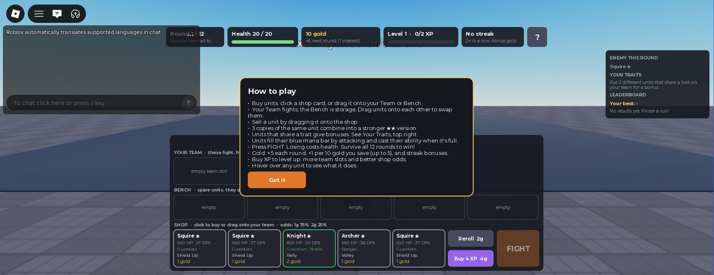
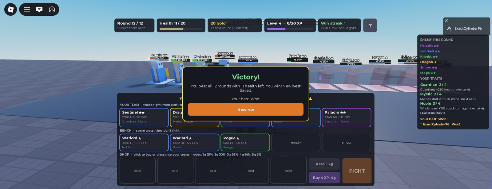

Autobattler is a Roblox game in the style of Teamfight Tactics. You buy units from a shop, arrange them on a board, and watch them fight waves of enemy teams on their own. I designed and built it solo in Luau, using Rojo so the code lives in Git and syncs into Roblox Studio, and it's published on Roblox.
How a Run Works
Each round you spend gold in the shop, reroll for better odds, and drag units between the shop, your team, and the bench. Three copies of a unit combine into the next star level, up to three stars, and each star makes it 1.8 times stronger. Fights play out as a live 3D replay in the arena. A run lasts 12 enemy rounds or until your health hits zero.

Systems
- 11 units from 1-cost Squires to a 5-cost Dragon, each with an ability that fires when its mana bar fills
- Four traits (Guardian, Mystic, Noble, Ranger) that switch on when two different units share one, with stronger tiers at higher counts
- Player levels that add board slots and improve shop odds
- Interest on saved gold (1 per 10 gold, up to 5) plus win and loss streak bonuses
- A global top-10 leaderboard and saved personal bests
Balancing With a Bot
To tune the 12 enemy rounds, I wrote a simulation where a bot plays full runs through the same game logic the server uses and prints the win rate for each round. It let me find rounds that were too hard or too easy without playing every run by hand.
Under the Hood
The server owns all game state. The client sends requests and draws whatever the server sends back, so players can't edit their gold or units. Each player gets their own session and arena, so several people can play on one server without sharing a board.

Through This Project I've Learned and Practiced